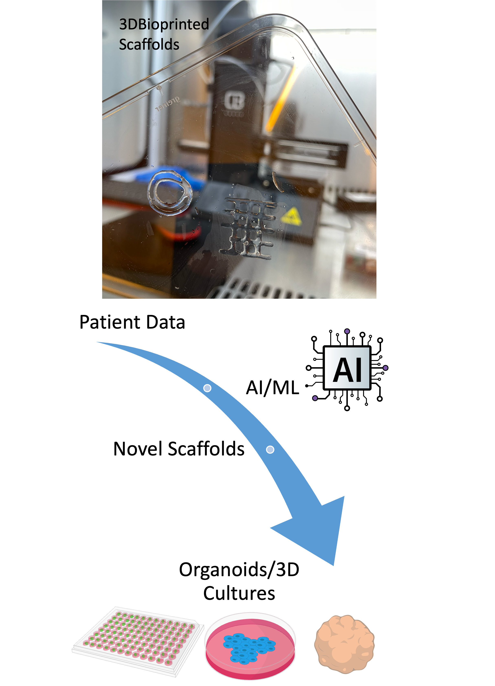

Research
Biocomputing for Biomedical Technology: Unlocking Biological Synthetic Intelligence from Biohybrids to Living System Interfaces.
My research explores the transformative potential of biocomputing and synthetic intelligence in advancing biomedical technology. I aim to develop innovative solutions for regenerative medicine, bioengineering, and next-generation therapeutic systems by bridging the gap between biohybrids and distributed interfaces within living systems. My work harnesses the untapped power of biocomputing to create adaptive and integrated synthetic biological systems, paving the way for breakthroughs in personalized healthcare and regenerative medicine.
Key Areas

Controlling tissue communication enables the discovery of novel activity patterns, unlocking new possibilities for
adaptive biological behaviors. My research proposes biocomputing as a platform to optimize cellular communication for
computational tasks, from Boolean logic circuits to biological artificial intelligence. Through both in-silico and in-vitro models, we have successfully
demonstrated logic gate functions in astrocytes, neurons, and bacteria, proving the feasibility of this approach.
This work encompasses the development of advanced control and optimization frameworks, integrating mathematical
derivations in control theory with machine learning-based methods. Moving forward, I aim to expand the boundaries of
biocomputing by identifying critical biological parameters for fully optimized systems. This research also focuses on
extending in-vitro analyses to explore innovative sensing and therapeutic applications derived from biocomputing
systems, paving the way for more efficient, adaptive, and biocompatible biomedical technologies.

Data-driven 4D bioprinting is transforming the landscape of biomedical technology by enabling the development of smart,
adaptive, and programmable biomaterials. Leveraging advanced AI and machine learning algorithms, my research focuses on
designing and fabricating biohybrid materials tailored to individual patient needs. These biomaterials dynamically
respond to changing biological environments and can be programmed for remote therapeutic interventions, offering
unprecedented precision in regenerative medicine.
By integrating environmental and biological data from their intended operational contexts, we devise strategies to
optimize the functionality and performance of these biohybrids. This approach not only enhances patient outcomes through
personalized medical solutions but also establishes a foundation for biocompatible materials with long-term stability
and seamless integration into living systems. My work seeks to push the boundaries of bioprinting, paving the way for
more efficient, versatile, and accessible technologies that will redefine the future of personalized medicine and
bioengineering.

Molecular propagation, interaction, and information encoding are central to the complexity of biological and medical
systems. My research harnesses the transformative potential of AI to decode these processes, addressing the inherent
challenges and limitations of experimental biology. By leveraging machine learning and computational models, we aim to
improve disease detection and therapeutic interventions, providing biologists and medical professionals with powerful
tools for precision healthcare.
This work focuses on the development of biological digital twins—highly detailed 3D+T reconstructions of tissues and
organs, including neurons, astrocytes, smooth muscle cells, epithelial cells, and bacteria. These digital twins,
validated against in-vitro experimental data, enable real-time simulation and predictive modeling of biological
behaviors.
Our research spans a wide range of critical areas, including genetic information processing, molecular biophysical
modeling, and dynamical biomarker discovery, alongside cutting-edge advancements in gene network analysis and
microscopic imaging. By bridging the gap between in-silico and experimental biology, this work aims to redefine how AI
integrates with biology and medicine, enabling breakthroughs in personalized healthcare and accessible medical solutions
worldwide.

The successful implementation of large-scale, long-term biohybrid systems relies on the precise coordination and
distribution of devices or externally controlled cells for targeted sensing and actuation within biological
environments. My research focuses on advancing wireless communication frameworks, enabling these biohybrid systems to
interact seamlessly with each other and external entities—a concept foundational to the vision of the Internet of
Bio-Nano Things.
We have developed and refined networking protocols for ultrasound-based communication, facilitating interactions between
external controllers and implantable devices. This includes powering batteryless implantable systems that serve as
AI-driven neural interfaces, capable of functioning as high-precision sensing mechanisms for biological neural networks.
Our work now explores integrating multiple communication modalities, such as ultrasound, optical, and RF-mmWave signals,
to create robust and efficient multi-channel systems. By validating these models with 3D ex-vivo platforms, we aim to
overcome challenges like signal loss and impedance mismatches, pushing the boundaries of high-bandwidth, biocompatible
wireless interfaces. This research is paving the way for the next generation of biohybrid technologies with applications
in regenerative medicine, neural interfacing, and beyond.
Controlling tissue communication enables the discovery of novel activity patterns, unlocking new possibilities for adaptive biological behaviors. My research proposes biocomputing as a platform to optimize cellular communication for computational tasks, from Boolean logic circuits to biological artificial intelligence. Through both in-silico and in-vitro models, we have successfully demonstrated logic gate functions in astrocytes, neurons, and bacteria, proving the feasibility of this approach. This work encompasses the development of advanced control and optimization frameworks, integrating mathematical derivations in control theory with machine learning-based methods. Moving forward, I aim to expand the boundaries of biocomputing by identifying critical biological parameters for fully optimized systems. This research also focuses on extending in-vitro analyses to explore innovative sensing and therapeutic applications derived from biocomputing systems, paving the way for more efficient, adaptive, and biocompatible biomedical technologies.
Data-driven 4D bioprinting is transforming the landscape of biomedical technology by enabling the development of smart, adaptive, and programmable biomaterials. Leveraging advanced AI and machine learning algorithms, my research focuses on designing and fabricating biohybrid materials tailored to individual patient needs. These biomaterials dynamically respond to changing biological environments and can be programmed for remote therapeutic interventions, offering unprecedented precision in regenerative medicine. By integrating environmental and biological data from their intended operational contexts, we devise strategies to optimize the functionality and performance of these biohybrids. This approach not only enhances patient outcomes through personalized medical solutions but also establishes a foundation for biocompatible materials with long-term stability and seamless integration into living systems. My work seeks to push the boundaries of bioprinting, paving the way for more efficient, versatile, and accessible technologies that will redefine the future of personalized medicine and bioengineering.
Molecular propagation, interaction, and information encoding are central to the complexity of biological and medical systems. My research harnesses the transformative potential of AI to decode these processes, addressing the inherent challenges and limitations of experimental biology. By leveraging machine learning and computational models, we aim to improve disease detection and therapeutic interventions, providing biologists and medical professionals with powerful tools for precision healthcare. This work focuses on the development of biological digital twins—highly detailed 3D+T reconstructions of tissues and organs, including neurons, astrocytes, smooth muscle cells, epithelial cells, and bacteria. These digital twins, validated against in-vitro experimental data, enable real-time simulation and predictive modeling of biological behaviors. Our research spans a wide range of critical areas, including genetic information processing, molecular biophysical modeling, and dynamical biomarker discovery, alongside cutting-edge advancements in gene network analysis and microscopic imaging. By bridging the gap between in-silico and experimental biology, this work aims to redefine how AI integrates with biology and medicine, enabling breakthroughs in personalized healthcare and accessible medical solutions worldwide.
The successful implementation of large-scale, long-term biohybrid systems relies on the precise coordination and distribution of devices or externally controlled cells for targeted sensing and actuation within biological environments. My research focuses on advancing wireless communication frameworks, enabling these biohybrid systems to interact seamlessly with each other and external entities—a concept foundational to the vision of the Internet of Bio-Nano Things. We have developed and refined networking protocols for ultrasound-based communication, facilitating interactions between external controllers and implantable devices. This includes powering batteryless implantable systems that serve as AI-driven neural interfaces, capable of functioning as high-precision sensing mechanisms for biological neural networks. Our work now explores integrating multiple communication modalities, such as ultrasound, optical, and RF-mmWave signals, to create robust and efficient multi-channel systems. By validating these models with 3D ex-vivo platforms, we aim to overcome challenges like signal loss and impedance mismatches, pushing the boundaries of high-bandwidth, biocompatible wireless interfaces. This research is paving the way for the next generation of biohybrid technologies with applications in regenerative medicine, neural interfacing, and beyond.